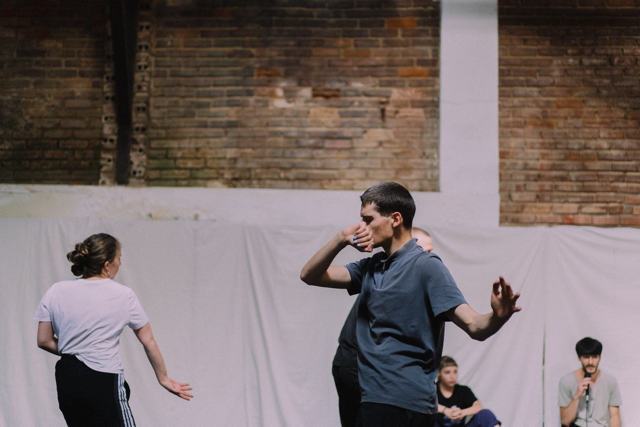

· ·

Contact / Pages
weselle [at] protonmail.com
LinkedIn
Google Scholar
GitHub
Resident Advisor
Strava
Bio
William Primett is a researcher and designer based in Tallinn, Estonia, specialising in Computational Embodiment.
Previously, affiliated with the AffecTech consortium supported by the Marie Sklodowska-Curie Innovative Training Network, pursuing the design of wearable technologies for emotional understanding in consideration of mental health disorders.
The outcomes of which contributing to their PhD thesis “Non-Verbal Communication with Physiological Sensors: The Aesthetic Domain of Wearables and Neural Networks” (2023), advocating for non-representational biofeedback appropriate for interpersonal dialogue.
William’s current research aims to merge principles of computational neuroscience, somaesthetic enquiry and narrative structure in audio-visual media.
Software Skills
C++, Embedded C, Python, Node.js,
Tensorflow, openFrameworks, Processing, ChucK,
Unity3D, Max/MSP, Ableton Live